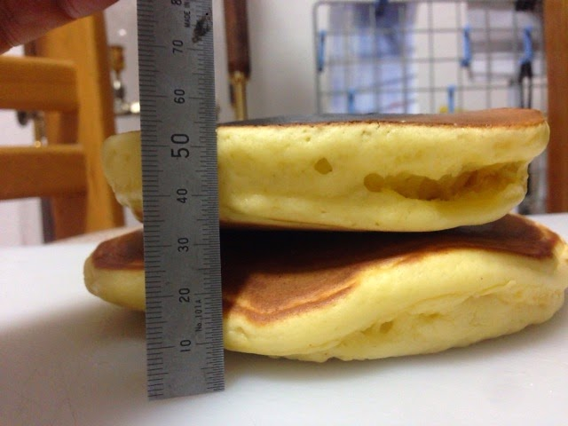

香珈の目指しているコーヒー店は、自宅で美味しくコーヒーを飲むためにできることを手の届く範囲でお届けすること。
コーヒーだけではなく、美味しいパンのお店の話だったり、自宅でつくれるデザートの話、時には子供たちの夢を叶えるお手伝いなど様々です。
これは、ホットケーキをどうやったら大きく膨らむかの実験をしました。

こんなことばり考えています。
さて、パンについて思うことを伝えます。
パンとコーヒーの相性は何だろう。クロワッサンやサンドウィッチもいいけれど、石窯で焼いたパンもいい。
でも、石窯でパンを焼くには大変な作業なんです。
石窯を作ることはそう簡単ではないし、燃料を集めたり、その燃料を乾燥させて、石窯で焼き、窯を高温にして石窯に残った灰を取り除いてから、そのタイミングに合わせてパンを二次発酵でいい状態にする。
超時間労働が当たり前の世界になっています。ガス窯でパンを焼いても、はやり労働時間は長い、重労働と大変なことは間違いありません。
香珈が考える石窯は、燃焼効率の良い石窯です。そして、パンを焼くときの灰の掃除から簡単なこと。最低限、これだけはクリアしたいと思う。
そこで、思いついたのがロケットストーブと石窯を合体させること。
インターネットで調べたら、ありました。
ロケットストーブ式の石窯。
まだ実験してませんが、確実に燃焼効率はエジプト式の石窯よりいいと思います。それに、完全燃焼するので煙もでないし、灰の量も少なくなります。
どうやって作ろうか、石窯を作り方を調べていると見つけました。
はやり、考える人はいるもんですね。
長野にあるざわざわと言うパン屋さんです。
こんな窯のパン屋さんが全国にできるといいなぁ。
ロケットストーブは、コンロや暖房にも使えるので、田舎暮らしができるなら是非作って見たいと思う。
鳥取に、すごい洋菓子屋さんを発見しました。
お店の名前は、トゥジュールさんです。
パンの講習会でこの店のことを知り、いきたいなぁと思っていてやっと実現できました。
石窯で焼く、ガトー・ア・ラ・ブロッシュがすごいです。
ガトー・ア・ラ・ブロッシュは、フランス版のバウムクーヘンです。